O nama
Radijator inženjering" d.o.o. u poslovnom smislu je pravni naslednik zanatske radnje ,,Radijatorˮ koja je osnovana 1991. godine, čija je osnovna delatnost bila montaža i održavanje centralnog grejanja. Prvi toplovodni kotao na čvrsto gorivo izradili smo 1985. godine.
Preduzeće u današnjoj formi postoji od 2002. godine, i iz godine u godinu, napreduje velikim koracima, uvek se trudeći da bude prvo u primeni novih tehnologija, kvalitetu proizvoda i osvajanju novih - evropskih tržišta.
Kako smo proširivali i usavršavali proizvodnju tako smo došli do nivoa da se kotlovi prave najsavremenijim svetskim tehnologijama. Iz oblasti sečenja limova izdvajaju se: sečenje laserom, CNC plazma postupak i CNC probijanje. Postupak zavarivanja izvodi se robotski kao i upotrebom automata. Najbolji pokazatelji kvaliteta proizvoda i usluga jeste činjenica da se svake godine proizvodnja povećava.
Danas "Radijator-inženjering" zapošljava preko 350 radnika od kojih je 40 dipl.maš.ing. koji svakodnevno rade na usavršavanju kvaliteta proizvoda.
Sigurna postojanost kvaliteta, kako proizvoda tako i poslovanja firme, potvrđena je dobijanjem sertifikata sistema kvaliteta ISO 9001:2008. Kompanija sa 35 godina iskustva u projektovanju, izradi i inovacijama na polju kotlova koji zagrevaju hiljade objekata širom Evrope!
Radijator Inženjering je domaći proizvođač kotlova na biomasu sa dugogodišnjom tradicijom, prepoznat po pouzdanim i tehnološki naprednim rešenjima za grejanje. Razvojem sopstvenih proizvodnih procesa i primenom savremenih tehnologija, stvaramo proizvode koji odgovaraju najvišim zahtevima tržišta kada su u pitanju kvalitet, efikasnost i dug vek trajanja.
Naša proizvodnja obuhvata kotlove snage od 15 do 500 kW, namenjene grejanju porodičnih kuća, stambenih i poslovnih objekata, javnih ustanova i industrijskih postrojenja. Zahvaljujući širokom asortimanu i mogućnosti izrade kaskadnih sistema, u mogućnosti smo da ponudimo optimalno rešenje za svaki objekat i svaku potrebu.
Kvalitet naših proizvoda rezultat je pažljivo odabranih materijala, precizne proizvodnje i rigorozne kontrole kvaliteta u svim fazama procesa. Svaki kotao razvijen je sa ciljem da obezbedi maksimalnu energetsku efikasnost, pouzdan rad i dugoročnu eksploataciju uz minimalne troškove održavanja.
Posebnu pažnju posvećujemo inovacijama i unapređenju tehnologije proizvodnje, kako bismo korisnicima obezbedili savremena rešenja koja kombinuju visok stepen automatizacije, jednostavno upravljanje i maksimalno iskorišćenje energije.
Svi naši proizvodi projektovani su i proizvedeni u skladu sa važećim evropskim standardima i propisima u oblasti kotlova, što predstavlja potvrdu njihove bezbednosti, pouzdanosti i visokog kvaliteta.
Izborom Radijator Inženjering kotlova birate domaći proizvod, provereni kvalitet i partnera koji svojim iskustvom, stručnom podrškom i kompletnim sistemskim rešenjima pruža sigurnost tokom celog životnog veka sistema grejanja.
PROIZVODNI PROGRAM – INDUSTRIJA
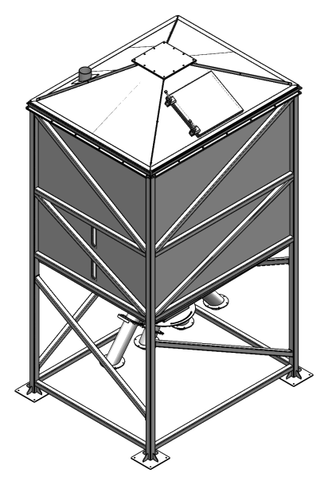
Serija TKAN modeli
Industrijski kotlovi na biomasu su izrađeni od kotlovskih limova debljine 6 mm i više. Izmenjivač toplote je od bešavnih, kotlovskih cevi. Stepen iskorišćenja je blizu 90% na pelet. Temperature dimnih gasova na izlazu su od 170 do 190 stepeni pri višim režimima, što uvek možemo da proverimo na displeju automatike. Dostupni su u osegu od 80 – 500 kW.
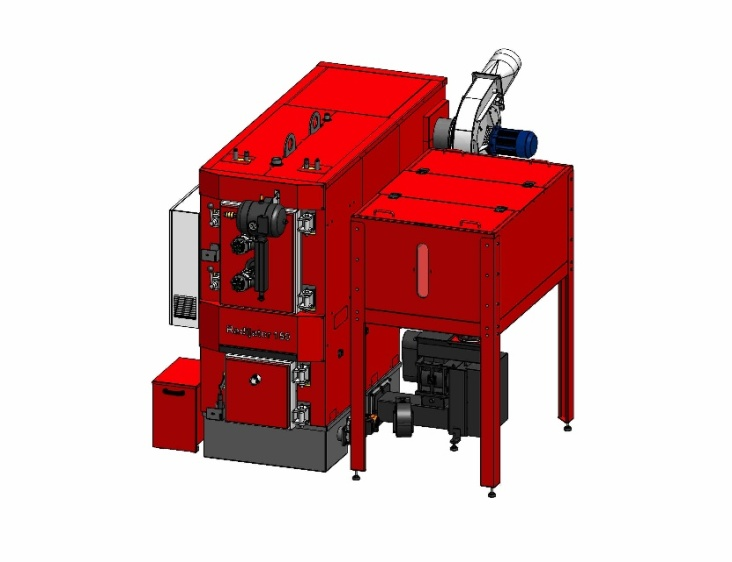
Serija TKAN Integra modeli
Industrijski kotao na biomasu predstavlja unapređenu verziju standardnog TKAN kotla. Opremljen je zidanim ložištem, naprednijom automatikom i bogatijom pratećom opremom, čime se postižu veća pouzdanost, bolja efikasnost sagorevanja i šire mogućnosti primene. Izrađen je od kotlovskih limova debljine 6 mm i više, sa izmenjivačem toplote od bešavnih kotlovskih cevi. Dostupan je u opsegu snaga od 80 do 500 kW.
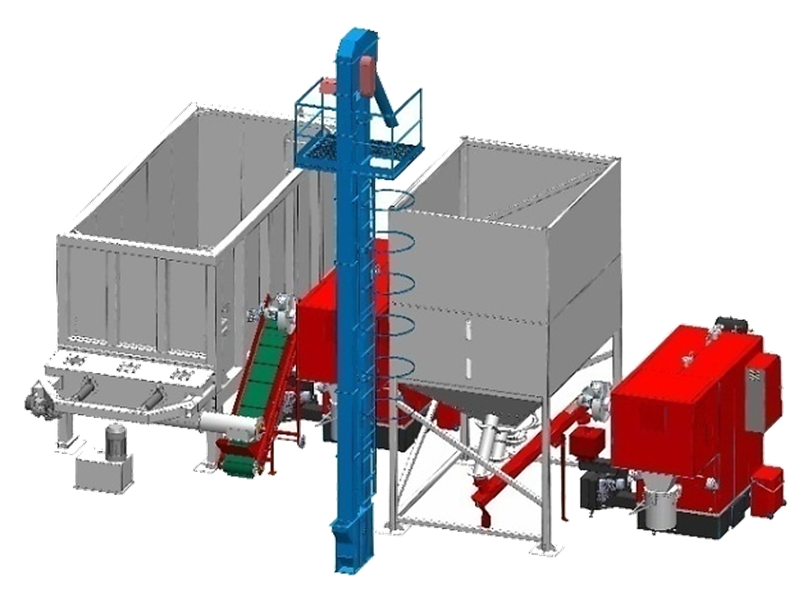
Kaskadni sistemi
Kaskadni sistemi predstavljaju kombinaciju dva ili više kotlova povezanih u jedinstven sistem sa zajedničkim silosom za skladištenje peleta. Ovakva konfiguracija omogućava veću ukupnu instalisanu snagu, pouzdaniji rad, ravnomernu raspodelu opterećenja i veću energetsku efikasnost sistema.
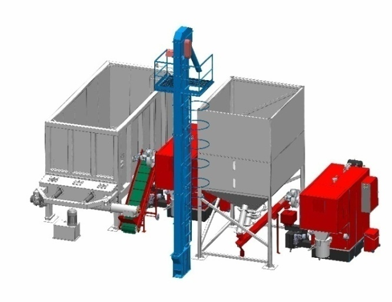
Dodatna oprema
Pored kotlova, u ponudi je kompletna prateća oprema za formiranje funkcionalnog sistema grejanja. Asortiman obuhvata silose za skladištenje peleta, pužne transportere, elevatore, bafer rezervoare, automatiku i ostalu opremu potrebnu za pouzdan transport, doziranje i kontrolu peleta, kao i siguran i efikasan rad celokupnog sistema.
TOPLOVODNI KOTAO NA PELET SA AUTOMATSKIM NALAGANJEM TKAN MODEL
(U ponudi snaga od 60 – 300 [kW] ) Kotao TKAN je razvijen sa ciljem da RADIJATOR INŽENJERING ponudi tržištu kotao koji je po svojim mehaničkim i termičkim osobinama izrazito namenjen biomasi kao gorivu. Sa druge strane zahtevi tržišta su uvek okrenuti ka što većoj univerzalnosti goriva, tako da je TKAN moguće ložiti i sa drvetom i tada je loženje ručno.
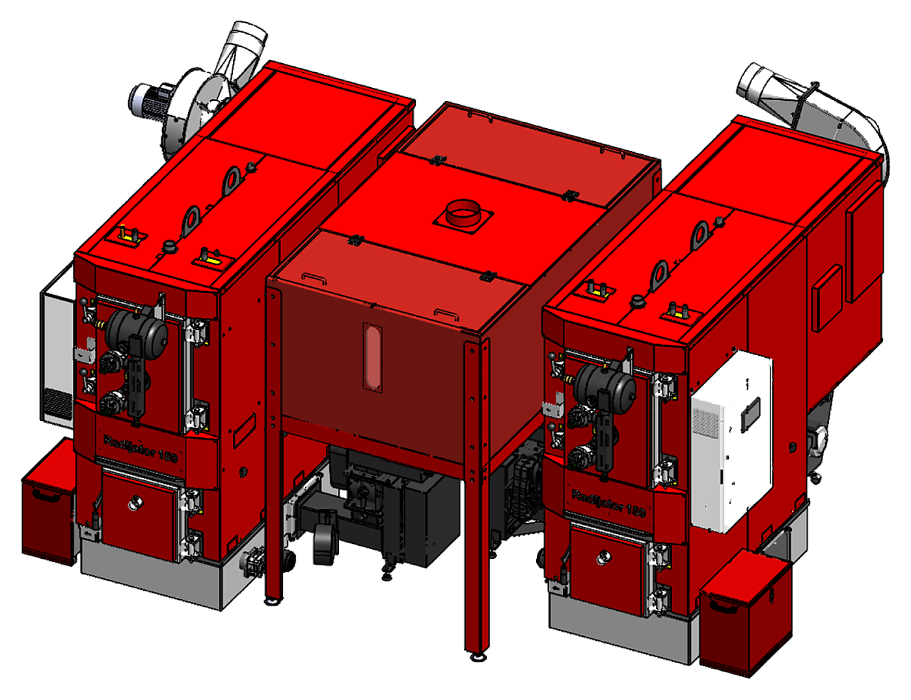
Po spoljašnjem dizajnu, dimenzijama ložišta, otvorima za loženje i čišćenje TKAN je zadržao sve dobre osobine predhodnih modela po kojima je RADIJATOR INŽENJERING prepoznatljiv na tržištu. Vodeni deo kotla, njegov način izmene toplote između dimnih gasova i vode putem cevnog izmenjivača, prilagođen je biomasi. Zbog primene ventilatora tj. prinudne promaje put dimnih gasova duži je nego kod standardnih kotlova. Iz istih razloga moguća je primena usmerivača dimnih gasova tzv. turbulatora koji dodatno povećavaju stepen iskorišćenja kotla. Turbulatori su spirale napravljene od specijalnog materijala.
Stepen korisnosti na pelet je preko 90%. Pri normalnim režimima temperatura dimnih gasovana izlazu je oko 160 ̊C, a pri maksimalnim režimima je ispod 180 ̊C. Ove vrednosti mogu u svakom trenutku da se očitaju na displeju.
Svi delovi vodenog dela kotla izrađeni su od bešavnih cevi kvaliteta ST 35.4 i kotlovskih limova debljine 5mm i više, u zavisnosti od snage kotla. Limovi su kvaliteta 1.0425 EU standard odnosno P265GH standard EUII. Ložište je po svom principu rada tzv. „izviruće“, gde gorivo iz zone transporta ide vertikalno uvis tj. izvire do zone sagorevanja. Napravljeno je od masivnih izolacijskih materijala i sivog liva. Transport goriva obezbeđen je pužnim transporterima.
Tabela 1. Raspoložive snage
| TIP KOTLA | TIP KOTLA | TIP KOTLA | TKAN 60 | TKAN 80 | TKAN 100 | TKAN 150 | TKAN 200/250/300 |
|---|---|---|---|---|---|---|---|
| Jed.mere | |||||||
| Snaga | Snaga | kW | 60 | 80 | 100 | 150 | 200/250/300 |
| Radni pritisak | Radni pritisak | kPa | 300 | 300 | 300 | 300 | 300 |
| Probni pritisak | Probni pritisak | kPa | 450 | 450 | 450 | 450 | 450 |
| Zapremina vode u kotlu | Zapremina vode u kotlu | L-cca | 276 | 368 | 460 | 690 | 920/1150/1380 |
| Masa kotla | Masa kotla | kg | 655 | 915 | 1073 | 1665 | 2260/2800/3080 |
| Masa silosa | Masa silosa | kg | 106 | 100 | 110 | 162 | 180/220/220 |
| As | mm | 610 | 610 | 810 | 1010 | 1394 | |
| Dimenzije | B | mm | 1020 | 1020 | 1176 | 1456 | 1830 |
| Dimenzije | Hs | mm | 1740 | 1736 | 1611 | 1875 | 1822/1822/2070 |
| V | lit. | 290 | 305 | 680 | 1600/2330/3115 | ||
| Količina peleta koja staje u silosu | Količina peleta koja staje u silosu | kg | 180 | 190 | 410 | 1000/1500/2000 |
PRESEK TKAN KOTLA SA OPISOM ELEMENATA
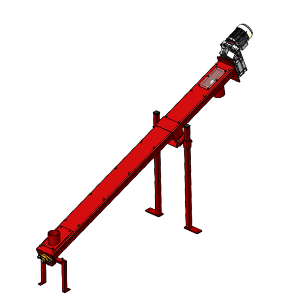
- Turbulatori
- Cevni izmenjivač
- Vrata za čišćenje cevnog izmenjivača i samog kotla
- Razvodni ormar sa automatikom
- Kanta za pepeo
- Vrata za loženje i potpalu
- Spirala za automatsko izbacivanje pepela iz prostora ložišta
- Ložište kotla
- Liveni segmenti
- Motor za pokretanje spirale za automatsko čišćenje ložišta
- Donja osovina pužnog transportera
- Ćelijski dozator (valvola)
- Gornja osovina pužnog transportera
- Izmenjivač termičkog osiguranja
TABELA SA DIMENZIJAMA TKAN KOTLA
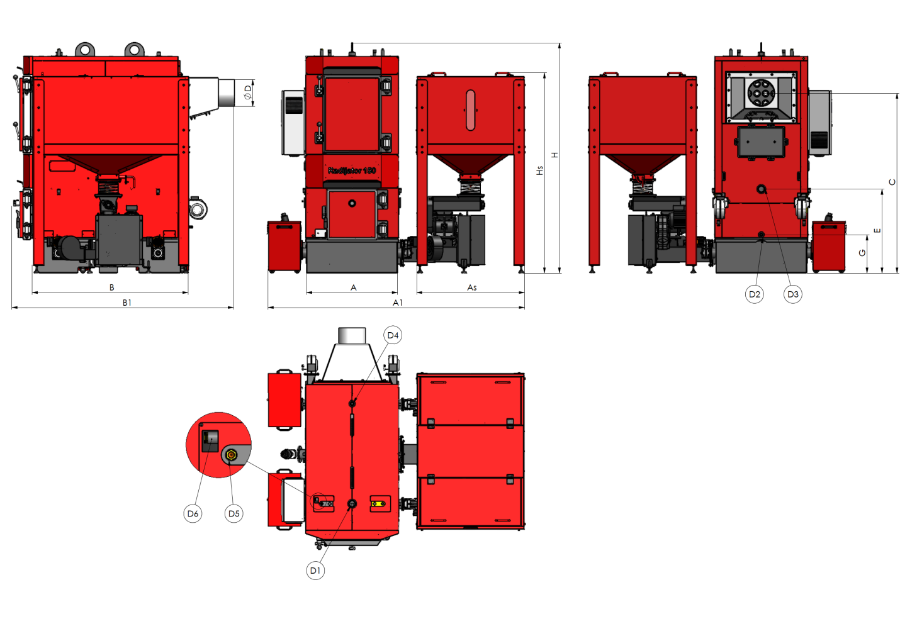
| DIMENZIJE | DIMENZIJE | DIMENZIJE | TKAN 60 | TKAN 80 | TKAN 100 | TKAN 150 | TKAN 200 | TKAN 250 | TKAN 300 | |
|---|---|---|---|---|---|---|---|---|---|---|
| A | mm | mm | 680 | 730 | 730 | 850 | 1005 | 1260 | 1260 | |
| A1 | mm | mm | 1355 | 1788 | 2080 | 2395 | 2945 | 3456 | 3455 | |
| As | mm | mm | 610 | 610 | 810 | 1010 | 1394 | 1394 | 1394 | |
| B | mm | mm | 1020 | 1020 | 1176 - 1286 | 1456 | 1830 | 1830 | 1830 | |
| B1 | mm | mm | 1518 | 1565 | 1727 | 2070 | 2121 | 2546 | 2546 | |
| C | mm | mm | 1125 | 1573 | 1573 | 1681 | 2044 | 2114 | 2114 | |
| ØD | mm | mm | 200 | 200 | 200 | 250 | 250 | 300 | 300 | |
| E | mm | mm | 675 | 417 | 417 | 785 | 675 | 707 | 707 | |
| G | mm | mm | 360 | 389 | 389 | 360 | 465 | 467 | 467 | |
| H | mm | mm | 1564 | 1960 | 1960 | 2151 | 2547 | 2663 | 2663 | |
| Hs | col | col | 1740 | 1736 | 1611 | 1875 | 1822 | 1822 | 2070 | |
| D1 | col | col | 6/4" | 2" | 2" | 2" | DN80 NP6 | DN80 NP6 | DN80 NP6 | |
| D2 | col | col | 6/4" | 2" | 2" | 2" | DN80 NP6 | DN80 NP6 | DN80 NP6 | |
| D3 | col | col | 1/2" | 1/2" | 1/2" | 1/2" | 1" | 1" | 1" | |
| D4 | col | col | 3/4" | 3/4" | 3/4" | 3/4" | DN40 NP16 | DN40 NP16 | DN40 NP16 | |
| D5 | col | col | 1/2" | 1/2" | 1/2" | 1/2" | 1/2" | 1/2" | 1/2" | |
| D6 | col | col | 1/2" | 1/2" | 1/2" | 1/2" | 1/2" | 1/2" | 1/2" | |
TABELA SA DIMENZIJAMA TKAN SILOSA

| DIMENZIJE | DIMENZIJE | DIMENZIJE | DIMENZIJE | DIMENZIJE | |
|---|---|---|---|---|---|
| A | B | H | V | Količina peleta koja staje u silosu | |
| mm | mm | mm | lit. | kg | |
| TKAN 80 | 606 | 1020 | 1736 | 290 | 180 |
| TKAN 100 | 810 | 1176 | 1611 | 305 | 190 |
| TKAN 150 | 1010 | 1456 | 1875 | 680 | 410 |
| TKAN 200/250/300 | 1394 | 1830 | 1828 | 1600 | 1000 |
| TKAN 200/250/300 | 1394 | 1830 | 2138 | 2330 | 1500 |
| TKAN 200/250/300 | 1394 | 1830 | 2448 | 3115 | 2000 |
TOPLOVODNI KOTAO NA PELET SA AUTOMATSKIM NALAGANJEM, OTPRAŠIVANJEM I CIKLONOM – TKAN INTEGRA MODEL
(U ponudi snaga od 80 – 500 [kW] )
TKAN INTEGRA predstavlja novu generaciju industrijskih kotlova na biomasu, razvijenu kao unapređenje standardnog TKAN modela. Nastao je kao odgovor na zahteve tržišta za većim stepenom automatizacije, višom energetskom efikasnošću i većom pouzdanošću u radu, uz zadržavanje svih proverenih konstrukcionih rešenja po kojima je RADIJATOR INŽENJERING prepoznatljiv.
Zahvaljujući zidanom ložištu, unapređenom sistemu sagorevanja, savremenoj automatici i bogatijoj standardnoj opremi, TKAN INTEGRA obezbeđuje stabilan rad, maksimalno iskorišćenje energije i dug radni vek svih ključnih komponenti. Konstrukcija kotla izrađena je od visokokvalitetnih kotlovskih limova debljine 6 mm i više, dok je cevni izmenjivač toplote izrađen od bešavnih kotlovskih cevi, čime su obezbeđeni visoka mehanička čvrstoća, pouzdanost i dugotrajnost sistema.
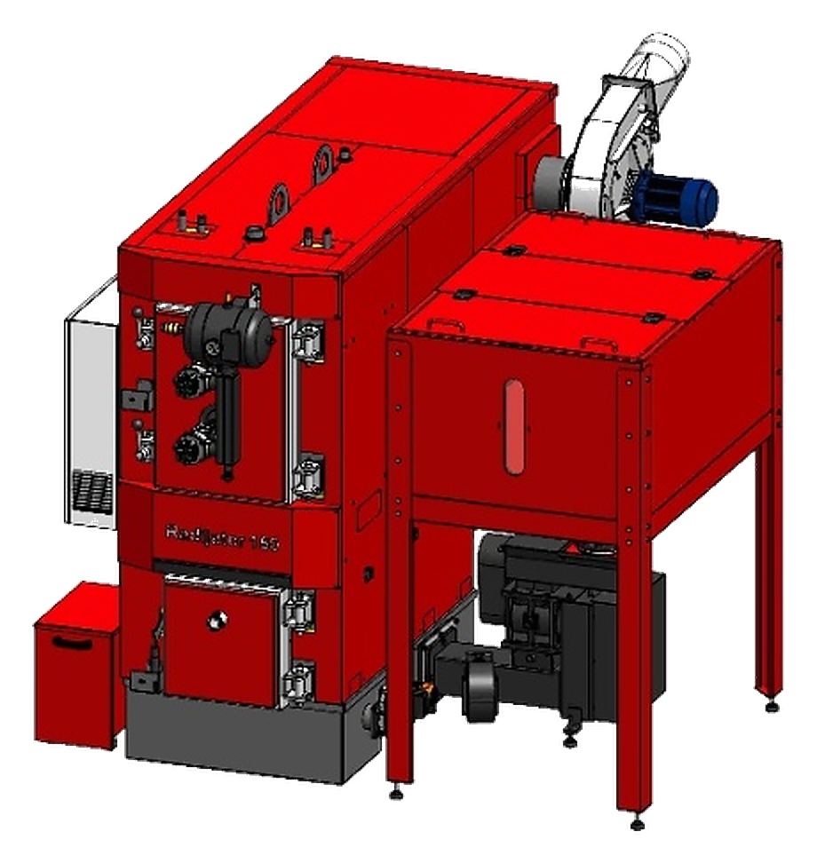
Zidano ložište predstavlja jednu od ključnih prednosti modela TKAN INTEGRA. Ovakva konstrukcija omogućava potpuno i stabilno sagorevanje goriva, minimalne emisije štetnih gasova i čestica prašine, kao i maksimalno iskorišćenje energije sadržane u peletu. Istovremeno, čelični delovi kotla nisu direktno izloženi plamenu, čime se značajno produžava radni vek kotla.
Kotlovi serije TKAN INTEGRA standardno su opremljeni sistemom za automatsko čišćenje prostora oko ložišta, dok se čišćenje cevnog izmenjivača vrši automatski pomoću komprimovanog vazduha. Sistem periodičnim vazdušnim impulsima uklanja naslage čađi iz dimovodnih cevi, održava visok stepen iskorišćenja kotla i značajno smanjuje potrebu za ručnim održavanjem.
Integra model opremljen je multiciklonom sa centrifugalnim ventilatorom, namenjenim za efikasno izdvajanje čestica iz dimnih gasova. Na ovaj način postiže se značajno smanjenje emisije prašine, čistiji rad sistema i ispunjavanje visokih ekoloških zahteva, uz mogućnost optimizacije dimovodnog sistema.
| TIP KOTLA | TIP KOTLA | TIP KOTLA | TKAN 80 Integra | TKAN 100 Integra | TKAN 150 Integra | TKAN 200/250/300 Integra |
|---|---|---|---|---|---|---|
| Jed.mere | ||||||
| Snaga | Snaga | kW | 80 | 100 | 150 | 200/250/300 |
| Radni pritisak | Radni pritisak | kPa | 300 | 300 | 300 | 300 |
| Probni pritisak | Probni pritisak | kPa | 450 | 450 | 450 | 450 |
| Zapremina vode u kotlu | Zapremina vode u kotlu | L-cca | 368 | 460 | 690 | 920/1150/1380 |
| Masa kotla | Masa kotla | kg | 1191 | 1415 | 2288 | 3240/5293/5605 |
| Masa silosa | Masa silosa | kg | 100 | 165 | 165 | 225 |
| As | mm | 606 | 1006 | 1006 | 1394 | |
| Dimenzije | B | mm | 1020 | 1456 | 1456 | 1830 |
| Dimenzije | Hs | mm | 1736 | 1872 | 1872 | 1822 |
| V | lit. | 290 | 680 | 680 | 1600/2330/3115 | |
| Količina peleta koja staje u silosu | Količina peleta koja staje u silosu | kg | 180 | 410 | 410 | 1000/1500/2000 |
PRESEK TKAN INTEGRA KOTLA SA OPISOM ELEMENATA
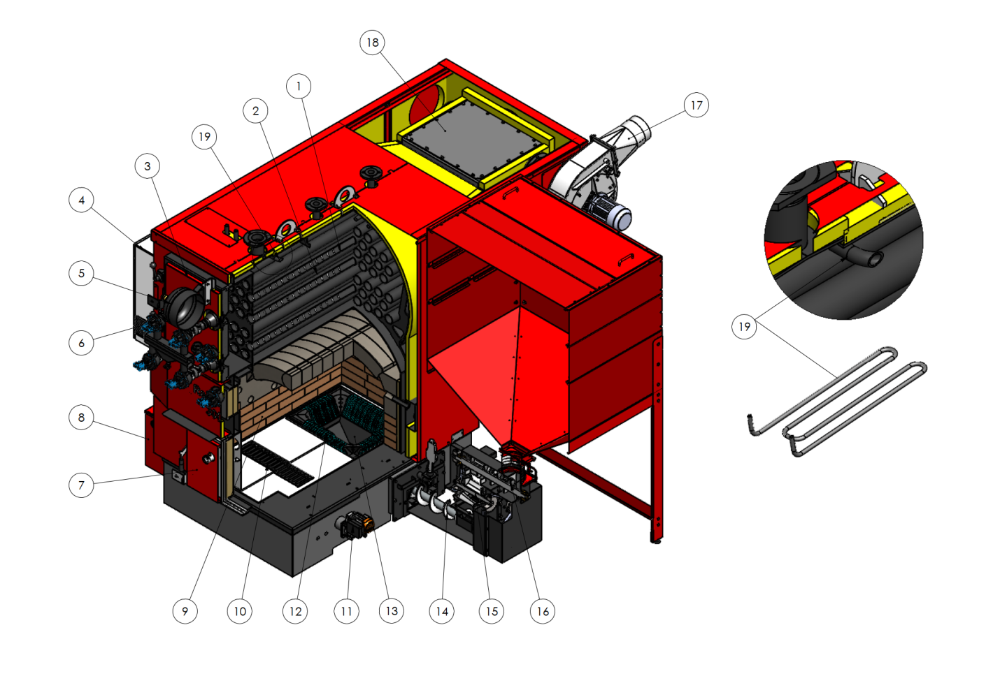
- Turbulatori
- Cevni izmenjivač
- Vrata za čišćenje cevnog izmenjivača i samog kotla
- Razvodni ormar sa automatikom
- Boca komprimovanog vazduha
- Impulsni elektroventil
- Vrata za loženje i potpalu
- Kanta za pepeo
- Ozida ložišta
- Spirala za automatsko izbacivanje pepela iz prostora ložišta
- Motor za pokretanje spirale za automatsko čišćenje ložišta
- Liveni segmenti
- Ložište kotla
- Donja osovina pužnog transportera
- Ćelijski dozator (valvola)
- Gornja osovina pužnog transportera
- Centrifugalni ventilator multiciklona
- Multiciklon
- Izmenjivač termičkog osiguranja
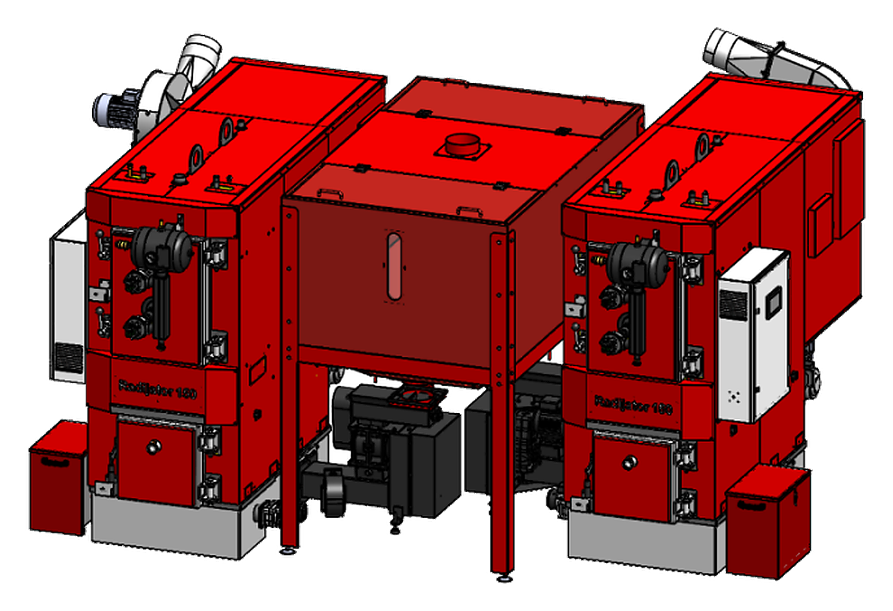
| DIMENZIJE | DIMENZIJE | TKAN 80 Integra | TKAN 100 Integra | TKAN 150 Integra | TKAN 200 Integra | TKAN 250 Integra | TKAN 300 Integra | |
|---|---|---|---|---|---|---|---|---|
| A | mm | 730 | 730 | 850 | 1005 | 1380 | 1380 | |
| A1 | mm | 1788 | 2276 | 2394 | 2942 | 3200 | 3200 | |
| As | mm | 606 | 1006 | 1006 | 1394 | 1394 | 1394 | |
| B | mm | 1020 | 1456 | 1456 | 1830 | 1830 | 1830 | |
| B1 | mm | 1655 | 1817 | 3099 | 3386 | 3755 | 3755 | |
| B2 | mm | 1595 | 1767 | 2729 | 2988 | 3360 | 3360 | |
| C | mm | 1507 | 1507 | 2080 | 2515 | 2312 | 2312 | |
| ØD | mm | 180 | 200 | 190 | 190 | 190 | 190 | |
| E | mm | 390 | 390 | 359 | 465 | 467 | 467 | |
| G | mm | 417 | 417 | 784 | 675 | 707 | 707 | |
| H | mm | 1960 | 1960 | 2151 | 2547 | 2413 | 2413 | |
| Hs | col | 1736 | 1872 | 1872 | 1822 | 1822 | 1822 | |
| D1 | col | 2" | 2" | 2" | DN80 NP6 | DN80 NP6 | DN80 NP6 | |
| D2 | col | 2" | 2" | 2" | DN80 NP6 | DN80 NP6 | DN80 NP6 | |
| D3 | col | 1/2" | 1/2" | 1/2" | DN40 NP16 | DN40 NP16 | DN40 NP16 | |
| D4 | col | 3/4" | 3/4" | 3/4" | DN40 NP16 | DN40 NP16 | DN40 NP16 | |
| D5 | col | 1/2" | 1/2" | 1/2" | 1" | 1" | 1" | |
| D6 | col | 1/2" | 1/2" | 1/2" | 1/2" | 1/2" | 1/2" | |
| Maseni protok (kg/h) | Maseni protok (kg/h) | 313 | 468 | 878 | 1116 | 1353 | 1461 |
TABELA SA DIMENZIJAMA TKAN INTEGRA SILOSA
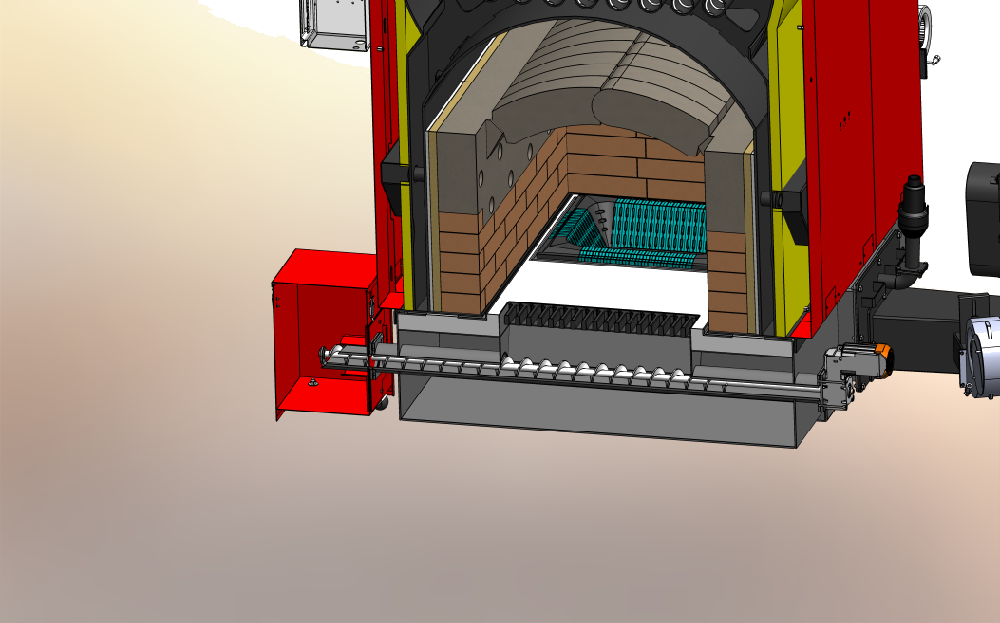
| DIMENZIJE | DIMENZIJE | DIMENZIJE | DIMENZIJE | DIMENZIJE | |
|---|---|---|---|---|---|
| A | B | H | V | Količina peleta koja staje u silosu | |
| mm | mm | mm | lit. | kg | |
| TKAN 80 Integra | 606 | 1020 | 1736 | 290 | 180 |
| TKAN 100 Integra | 1006 | 1456 | 1872 | 680 | 410 |
| TKAN 150 Integra | 1006 | 1456 | 1872 | 680 | 410 |
| TKAN 200/250/300 Integra | 1394 | 1830 | 1828 | 1600 | 1000 |
| TKAN 200/250/300 Integra | 1394 | 1830 | 2138 | 2330 | 1500 |
| TKAN 200/250/300 Integra | 1394 | 1830 | 2448 | 3115 | 2000 |
POLOŽAJ TKAN OBIČNOG i TKAN INTEGRA KOTLA U KOTLARNICI
Kotlarnica mora biti obezbeđena od smrzavanja. Podloga za kotao u kotlarnici mora biti od nezapaljivog materijala. Preporučene vrednosti udaljenosti sve četiri strane kotla u odnosu na zidove kotlarnice ili neka druga kruta tela (akomulacioni bojler itd.) prikazane su tablično slici ispod.
Pozicioniranje kotla u kotlarnici
| DIMENZIJE | DIMENZIJE | DIMENZIJE | DIMENZIJE | |
|---|---|---|---|---|
| Tip kotla | A (mm) | B (mm) | C (mm) | D (mm) |
| TKAN 60 | 100 | 400 | 1000 | 800 |
| TKAN 80 | 500 | 400 | 1000 | 800 |
| TKAN 100 | 500 | 400 | 1000 | 800 |
| TKAN 150 | 500 | 550 | 1000 | 1000 |
| TKAN 200 | 600 | 650 | 1000 | 1000 |
| TKAN 250 | 600 | 900 | 1000 | 1100 |
| TKAN 300 | 600 | 900 | 1000 | 1100 |
| TKAN 80 Integra | 500 | 400 | 1000 | 800 |
| TKAN 100 Integra | 500 | 400 | 1000 | 800 |
| TKAN 150 Integra | 500 | 550 | 1000 | 1000 |
| TKAN 200 Integra | 600 | 650 | 1000 | 1000 |
| TKAN 250 Integra | 600 | 900 | 1000 | 1100 |
| TKAN 300 Integra | 600 | 900 | 1000 | 1100 |
KASKADNI SISTEMI
Kompanija Radijator Inženjering razvila je seriju kotlova TKAN prvenstvenstveno za sagorevanje biomase (peleta, koštica voća) i drveta. Kada se ovi kotlovi povezuju u kaskadne sisteme, dobija se izuzetno moćno i fleksibilno rešenje za grejanje velikih objekata.
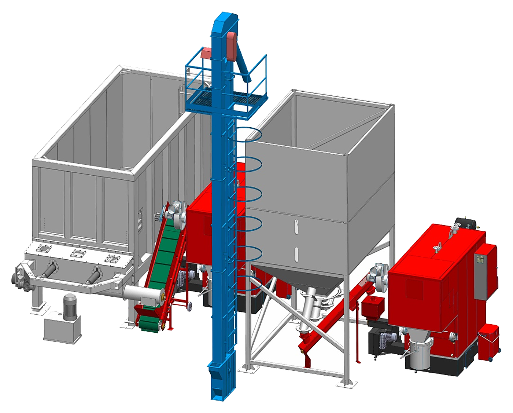
Primena TKAN kotlova u kaskadi
- Za kaskadne sisteme najčešće se koriste industrijski modeli veće snage, kao što su TKAN 100, 150, 200, 250 i 300 kW.
- Pokrivanje velikih snaga: Povezivanjem npr. dva kotla TKAN 300 u kaskadu, dobija se sistem ukupne snage od 600 kW koji može da greje hotele, proizvodne hale ili stambene komplekse.
- Modularnost i fleksibilnost: U prelaznim periodima (jesen/proleće) radi samo jedan TKAN kotao na optimalnom režimu, dok se drugi pali tek kada spoljna temperatura drastično padne.
Specifičnosti TKAN kaskadnih sistema
Modularnost i fleksibilnost: U prelaznim periodima (jesen/proleće) radi samo jedan TKAN kotao na optimalnom režimu, dok se drugi pali tek kada spoljna temperatura drastično padne.
Upravljanje i automatika: TKAN kotlovi poseduju naprednu elektroniku koja preko spoljnih kaskadnih regulatora omogućava sinhronizovan rad. Automatika prati temperaturu u hidrauličnoj skretnici i komanduje koji će kotao startovati.
Kontinuirano snabdevanje gorivom: Industrijski TKAN kotlovi dolaze sa dnevnim silosima (npr. 800 litara) koji se preko dodatnih pužnih transportera mogu povezati sa jednim velikim, centralnim silosom za pelet koji snabdeva celu kaskadu.
Sigurnost i kontinuitet: Ukoliko je na jednom kotlu potrebno uraditi čišćenje pepela ili redovan servis, hidraulički sistem i kaskadna automatika omogućavaju da drugi kotao nesmetano nastavi rad, tako da objekat nikada ne ostaje bez grejanja.
Hidrauličko povezivanje
Kod kaskade TKAN kotlova obavezna je ugradnja hidraulične skretnice i akumulatora toplote (bafera). Bafer je ključan kod kotlova na biomasu jer apsorbuje višak energije i sprečava česta paljenja i gašenja kotlova, čime se drastično produžava vek trajanja elektronike i upaljača.
DODATNA OPREMA
Kod serije TKAN dodatna oprema može da obuhvata opremu za automatsko doziranje goriva, skladištenje peleta, regulaciju i povezivanje kotlova.
Dodatna oprema je prilično široka i praktično se deli na četiri glavne grupe: automatsko čišćenje (odvajanje pepela/čađi (ložišni deo), termo izmenjivački deo (odnosno njegova vrata), ciklon za izdvajanje pepela i automatski transport peleta (veliki silos i automatizovani transport do kotla).
- U ložišnom delu, za automatsko izdvajanje pepela ugrađuju se dve pužne spirale sa svojim elektro pogonima. One pepeo ubacuju u dve kutije koje povremeno treba prazniti.
- Na vrata izmenjivačkog sklopa cevi ugrađuje se sistem elektromagnetnih ventila koji povremeno puste vazduh pod pritiskom i na taj način čiste cevi kotla od pepela i čađi. Potreban je izvor vazduha pod pritiskom određenog kapaciteta kao i automatika koja vodi ovaj proces.
- Zbog smanjene emisije čestica pepela u vazduhu, preporučuje se ugradnja ciklona naročito ako je kupac ugradio i sistem pneumatskog čišćenja.
- Kod velikih sistema gde se dnevna potrošnja peleta kreće i od nekoliko stotina kilograma, pa do nekoliko tona, preporučuje se ugradnja velikog silosa sa kofičastim elevatorom. On je sistemom pužnih transportera vezan sa malim silosom, a ceo proces dopreme je automatizovan sa sondama minimuma i maksimuma u malom silosu.

VEĆI DNEVNI SILOS
Standardni TKAN kotlovi opremljeni su dnevnim silosom, dok proizvođač za veće sisteme omogućava izradu većih spoljnih silosa sa posebnim dimenzijama. U zavisnosti od potreba sistema, mogu se izraditi silosi kapaciteta nekoliko desetina tona sa kofičastim elevatorom.
Veliki spoljni silos povezuje se sa dnevnim silosom kotla putem pužnih transportera, čime se omogućava automatsko dopremanje dnevnog silosa putem sondi minimuma i maksimuma. Za skladištenje većih količina peleta mogu se koristiti i Jumbo vreće.
Kod novijih modela TKAN 60–300, standardni dnevni silos ima zapreminu od 800 litara, uz mogućnost povezivanja sa velikim spoljnim silosom. Povezivanje može biti izvedeno bočno ili čeono, u zavisnosti od rasporeda opreme i prostornih uslova. Dakle:
veliki centralni silos → pužni transporter → dnevni silos TKAN → puž do ložišta
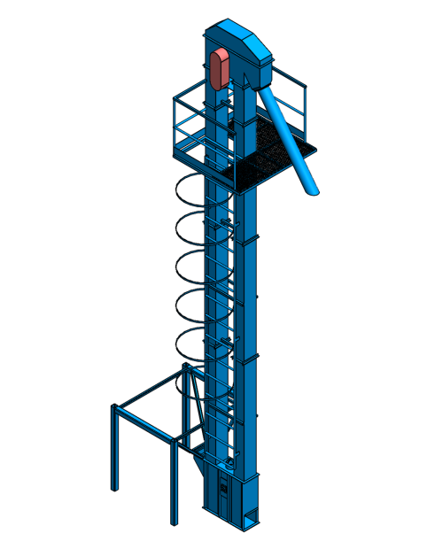
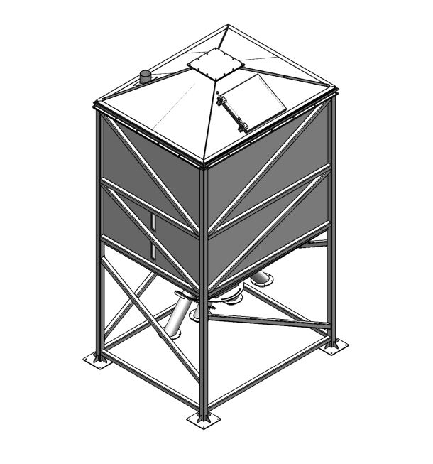
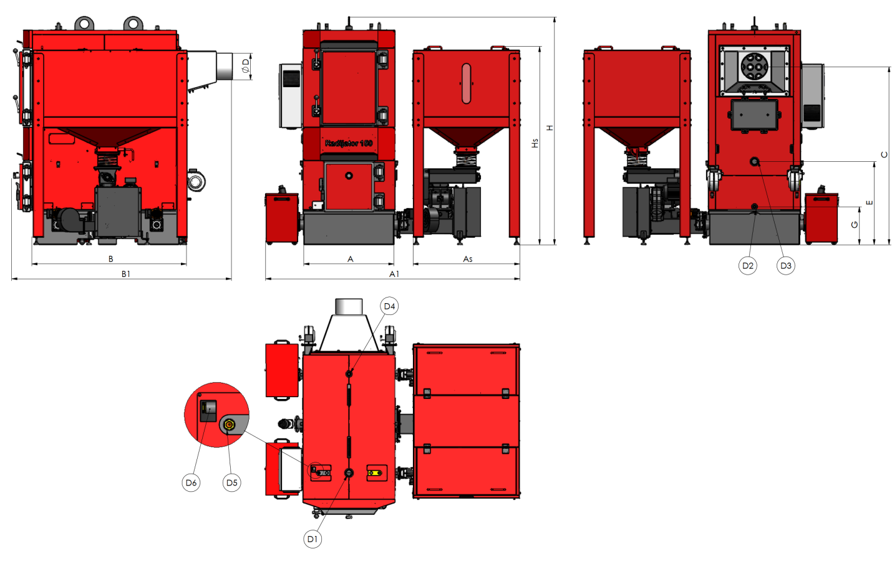
AUTOMATSKI TRANSPORT PELETA
Proizvođač predviđa: pužne transportere, pogone/motore pužnih transportera, povezivanje velikog i dnevnog silosa, automatsko dopunjavanje dnevnog silosa, sonde minimuma i maksimuma u dnevnom silosu.
Kod velikih sistema preporučuje se veliki silos sa kofičastim elevatorom, pužnim transporterima i automatskim dopunjavanjem dnevnog silosa putem sondi minimuma i maksimuma. Za skladištenje većih količina peleta mogu se koristiti i Jumbo vreće.
Automatika kotla može da upravlja motorom puža za dopremu iz velikog silosa.
Za kaskadu više TKAN kotlova, ovo je posebno interesantno jer se može projektovati centralni sistem distribucije peleta.
Kod automatskog punjenja dnevnog silosa koriste se sonde minimuma i maksimuma. Princip je: MIN → uključi transport peleta MAX → zaustavi transport peleta Na taj način kotao sam traži gorivo iz centralnog skladišta i ne zahteva ručno dopunjavanje.
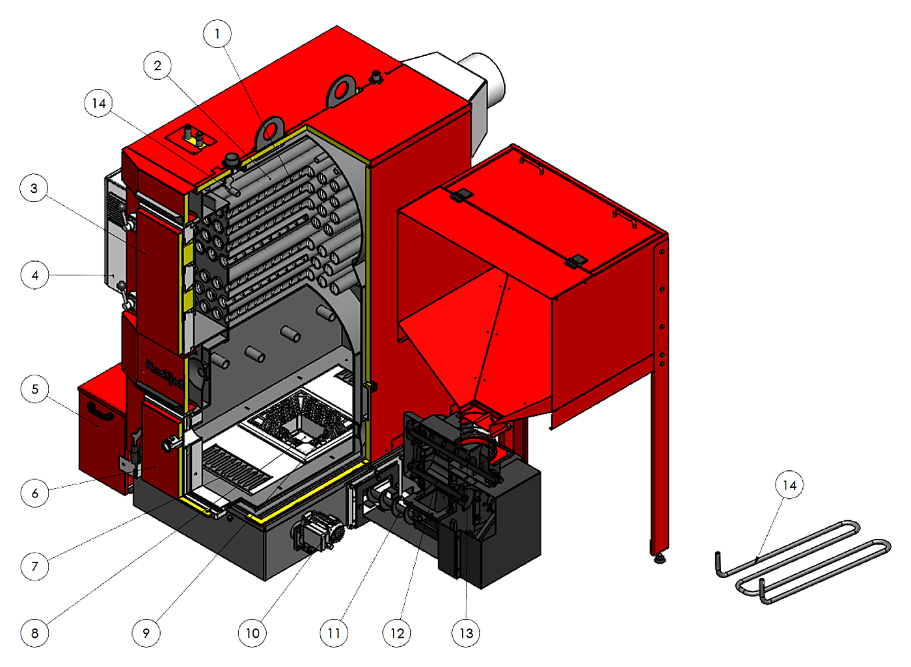
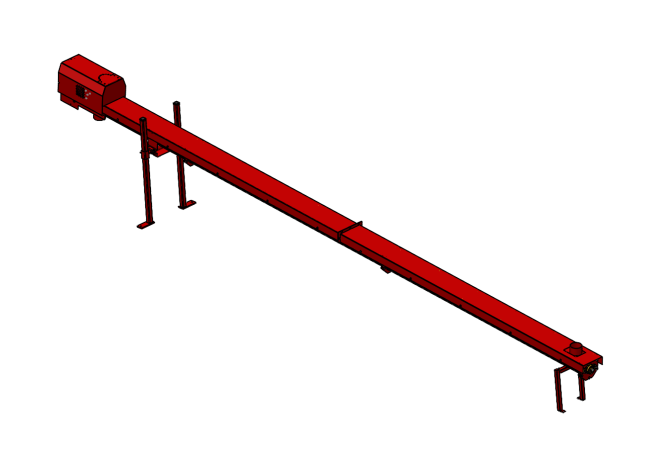
AUTOMATSKO IZBACIVANJE PEPELA IZ LOŽIŠTA
Kod dopunske opreme za TKAN ugrađuju se pužne spirale sa elektromotornim pogonima za automatsko izdvajanje pepela. Za određene industrijske TKAN konfiguracije proizvođač navodi dve pužne spirale, koje pepeo izbacuju u kutije/kontejnere. To znači:
ložište → pužni transport pepela → kutija za pepeo Kutije se i dalje povremeno prazne, ali nema potrebe da se pepeo ručno čisti iz samog ložišta svakog dana.
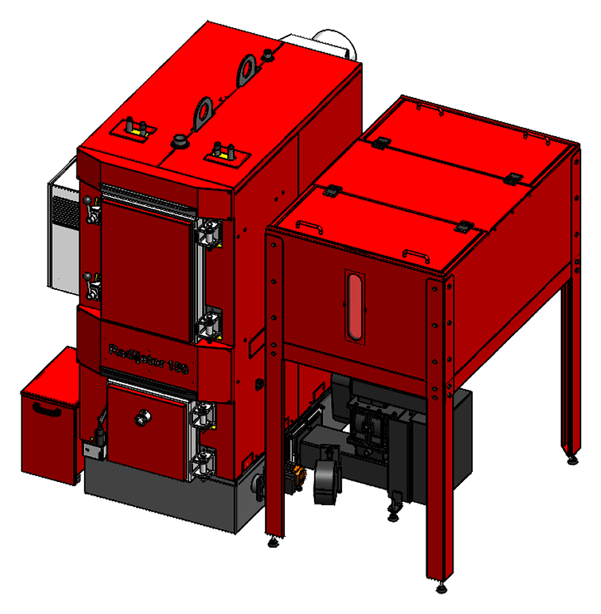
AUTOMATSKO PNEUMATSKO ČIŠĆENJE IZMENJIVAČA
Ovo je veoma korisna dodatna oprema. Na vratima izmenjivača ugrađuje se sistem elektromagnetnih/pulsnih ventila koji ubacuju vazduh pod pritiskom kroz cevi izmenjivača. Za sistem su potrebni: kompresor, rezervoar/posuda komprimovanog vazduha, ventili, cevi, automatika za upravljanje impulsima.
Sistem periodično izduvava čađ i pepeo iz dimnih cevi. Kod TKAN Integra kotlova je upravo takav sistem automatskog čišćenja komprimovanim vazduhom.
CIKLON / MULTICIKLON
Za smanjenje količine čestica koje odlaze u dimnjak predviđen je ciklon, odnosno kod većih konfiguracija multiciklon sa centrifugalnim ventilatorom. Proizvođač posebno preporučuje ciklon kada se koristi pneumatsko čišćenje izmenjivača, jer se tada dodatno izbacuje pepeo/čađ iz kotla. Kod većih TKAN Integra modela koristi se multiciklon sa centrifugalnim ventilatorom. Tačnije, kod modela TKAN 80 Integra i TKAN 100 Integra ugrađen je ventilator na dimnjači, dok je kod modela TKAN 150 Integra, TKAN 200 Integra, TKAN 250 Integra i TKAN 300 Integra konstruisan multiciklon sa centrifugalnim ventilatorom.
VENTILATOR DIMNIH GASOVA
Kod pojedinih TKAN konfiguracija koristi se ventilator na dimovodnoj strani, a kod većih sistema multiciklon može biti opremljen centrifugalnim ventilatorom. Ovo je bitno prilikom projektovanja kompletnog dimnjaka, naročito ako ima: više kotlova, duži dimovod, ciklon/multiciklon, veći broj kolena, zajednički dimnjak.
TERMIČKO OSIGURANJE KOTLA
Industrijski TKAN ima izmenjivač sa priključcima za ventil termičkog osiguranja oticanjem. Ventil omogućava direktno ubacivanje vode za zaštitu kotla u slučaju pregrevanja.
Ovo nije isto što i dodatna oprema za pelet, ali je veoma važan deo kompletne sigurnosne konfiguracije.